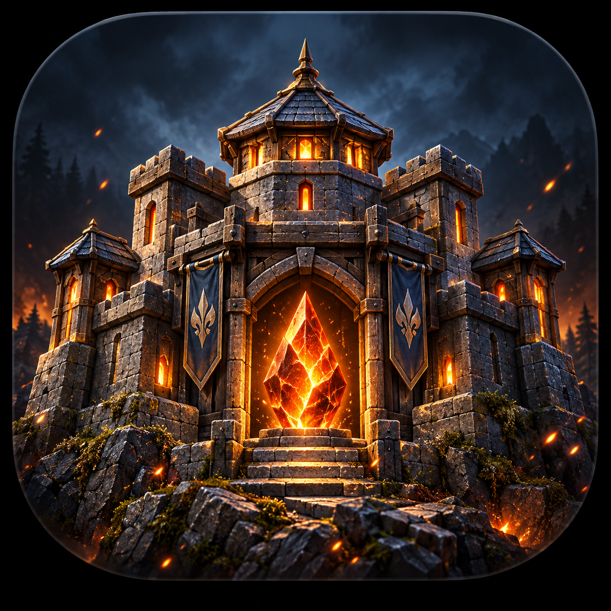
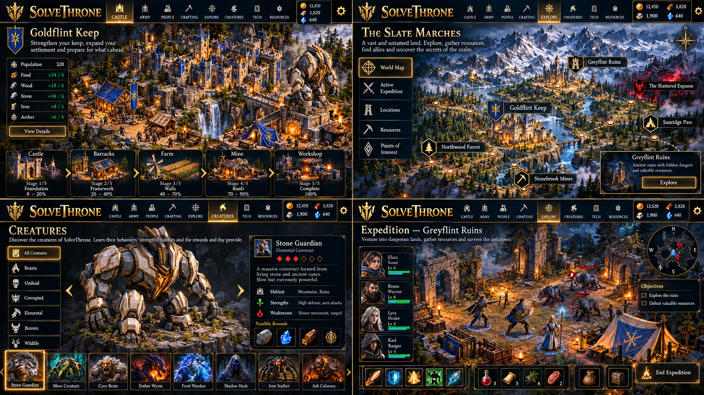
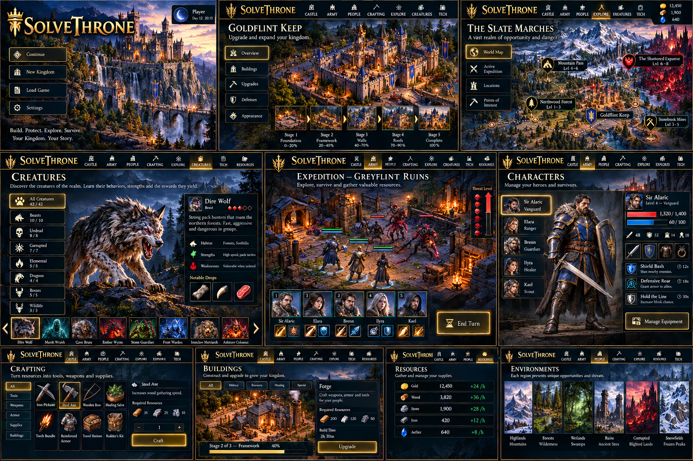
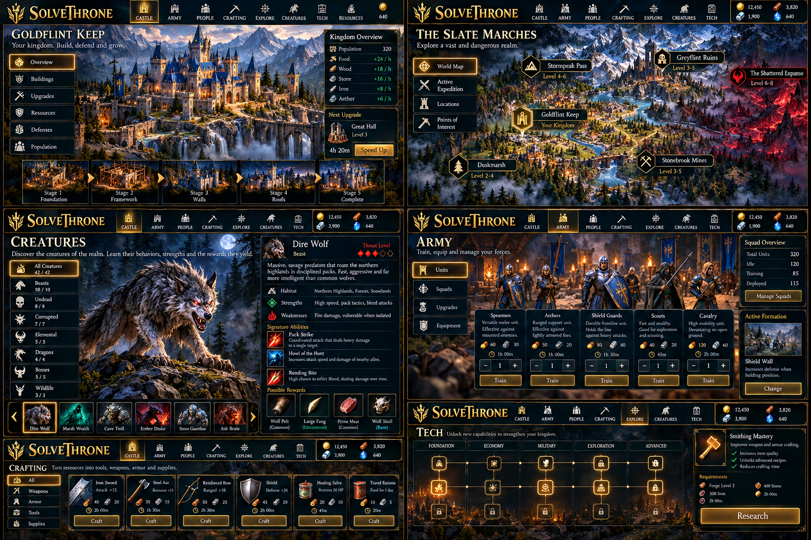
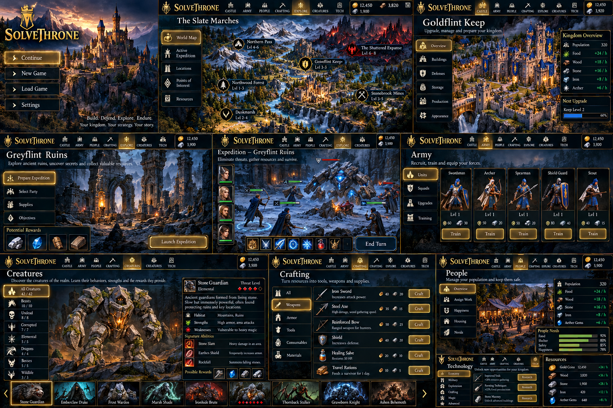

Give your survivors a home.
Place shelters, terraces, workshops and defenses. Assign workers, manage materials and keep construction connected to the settlement road.
Play in your browserBuild 14 · Offline single-player
An original single-player survival strategy game
Version 6.0.0 · Build 14
Build your kingdom.
Defend your people.
Explore the unknown.
Build a fortress in a dark, unsettled world. Keep your people fed, prepare their equipment and lead a squad beyond the walls. Return with supplies before the next night threatens your hearth.
Play the Build 14 offline single-player game in your browser. Save progress locally and return through the same browser and site.
Build 14 is available for browser play. Build your settlement, manage survivors, craft supplies and explore expeditions. Accounts, multiplayer and cross-device saves are not part of this offline release.

In Development
Four Concept Mockup boards explore the visual direction. They are not development screenshots, implemented-feature evidence or a playable release.
Concept Mockup — In DevelopmentVisual design studies, not live gameplay.
Explore the visual direction for SolveThrone, The Slate Marches, Goldflint Keep, Greyflint Ruins and Creatures. These are the original design boards. In-image names, characters, unit types, numbers, timers, levels and progress are illustrative, not canonical game specifications or claims of implemented features. Select an image to view its full-resolution original.




Concept artwork illustrates the intended visual direction. Characters, environments and systems may change during development. Public game installation and play remain subject to their separate release requirements.
Implemented Feature · Offline Build 14
Place shelters, terraces, workshops and defenses. Assign workers, manage materials and keep construction connected to the settlement road.
Craft tools, bows, armor, medicine and field supplies. Equip actual inventory, refine gear and research protection for your settlement.
Move through tactical encounters, use cover and limited sight, recover supplies and help stranded survivors. Bring the squad home to face warned nighttime incursions.
Player guide
Build a settlement, prepare your survivors and bring your expedition home. The in-game Field manual explains each system as you explore.
Follow the opening objectives. In Settlement, choose a structure and select a free tile connected to the southern road. Complete shelter, food production and a usable workshop before expanding.
Open Survivors to manage work and equipment. Keep healthy people at home for construction and gathering. Building crews pause their usual gathering while they work.
Open Workshop, review a recipe's materials and place an order. When an item is ready, equip it from Survivors. Prepare tools, armor and supplies before assigning your expedition squad.
Assign healthy home survivors to Squad. Open World map, select an unlocked route and confirm travel. Check the food cost, weather and squad readiness before leaving.
Move to adjacent open tiles and use cover. Read the enemy's visible intent before choosing Attack, Guard or supplies. A successful field action gives the enemy its response.
Approach a cache or refuge before choosing Collect or Rescue. Defeat the threat and extract from the western edge to keep your rewards and cargo. Back home, check Defense for damage and repair needs.
Click a tile to select it. With the board focused, use the arrow keys to move the cursor and Enter to choose a tile. Press R to rotate the selected wall or gate, or use the on-screen Rotate action.
Hold the middle mouse button to pan the settlement. Hold Ctrl and scroll to zoom around the pointer. Press Escape to return to the controls.
Use Save settlement before leaving and the game's exit controls to finish safely. Return through the same browser and site for your local settlement.
Use Pause / resume when you need time to plan in a local game. In Settings, adjust Text size or Mute all sound. Open Journal, then Read field manual for more help.
Platform readiness
Play the verified Build 14 browser release. Every new player begins with the opening settlement; your own progress can be saved locally in your browser.
The Windows development candidate has owner gameplay and sound review. This does not announce a public Windows download.
Offline single-player browser play with local settlement saving. Player accounts, multiplayer and cross-device services are not available in this release.
The installed Android Build 14 package and signer are verified, and the owner has approved gameplay on Samsung. No public Android download is announced.
Request Android beta inviteThe Apple build and device lane has not been qualified. No iOS release or store link is available.
Request iOS beta inviteThe Build 14 offline browser release supports settlement building, crafting and expeditions, connected wall and gate placement, building relocation, and a visible road into World map exploration. The wider game continues to develop.
Player accounts, multiplayer and cross-device profiles remain in development and are not publicly released. Optional paid cosmetics are planned, and real payments remain inactive. Core integration remains outside the current game scope. No store availability or release date is being announced.
Browser play is available above. Public Windows, Android and iOS downloads remain subject to their separate release processes. An Android App Bundle is a store-upload artifact.
Follow the development
Join Android or iOS beta testing and help shape the mobile game. Request an invitation through SolveMotion Labs; the release owner confirms builds and access for each platform.